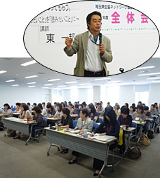

|
|
■講 座  テーマ：生協のココを知ってもらう。 ～「伝えたいこと」から「読みたいこと」に～ 講 師：東 一邦氏 (さいたま市市民活動サポートセンター長） ＜概 要＞ 編集者は書く人(伝えたいことがある人)の伝えたいことを、読み手に読みたいと思わせるのことが仕事です。書き手は思いがあるため、読み手の事を考えて文章を考えないことも多々あり、そのため伝えたいことが伝わりにくいことがあります。 そこで編集とは原稿の整理をして読み手の興味を引きつけます。例えば、週刊誌では電車のつり広告や新聞広告の｢キャッチコピー｣で中身を読みたいと思わせます。悪い例を3例紹介し、伝えたいことを持っている人が編集をすると、素人の9割は失敗をしています。また、書く人へ遠慮し、読み手の事を忘れてしまう場合もあります。常に編集する人は読み手になることが必要です。 文章の一例を参考にキャッチコピーの作成後、みんなが考えたコピーを張り出し、お互いに好きな物に投票、どうしてそれがいいと思ったのか感想と、講師の講評をいただきました。 |